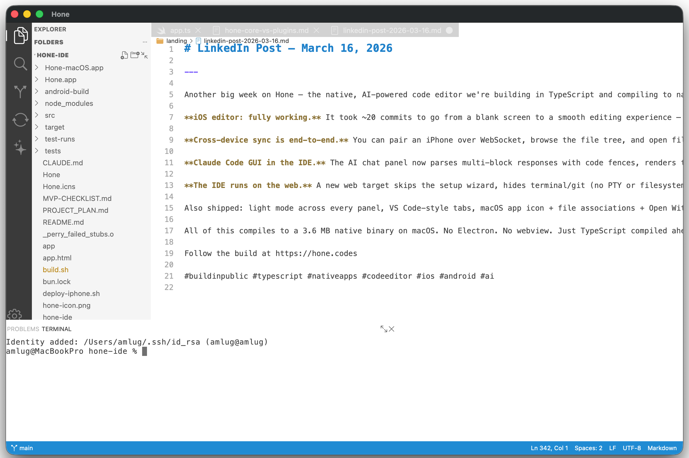

A native, AI-powered code editor for every platform. Written in TypeScript, compiled to native via Perry. No Electron. No compromise.

Actual screenshot. Yes, there are little imperfections — we're building in the open, remember?
Built from scratch in TypeScript, compiled to native binaries via Perry. Every component is designed for performance, modularity, and developer joy.
No Electron, no Chromium, no V8 runtime. Perry compiles TypeScript directly to native binaries. Under 50MB, under 100MB RAM, sub-second startup.
AI isn't bolted on — it's woven into the editor's core. The AI sees your syntax tree, your errors, your git diff, your terminal. Deep context, not just text.
Claude, GPT, Gemini, Ollama, or your company's private model. Your API key, your choice. Mix different providers for different features. No vendor lock-in.
Describe what you want. The agent reads your code, plans changes, edits files, runs tests, and iterates — with per-hunk approval before anything is committed.
Review pull requests in-editor with full syntax highlighting, LSP intelligence in diffs, and AI-powered annotations that catch bugs before humans do.
hone-editor, hone-terminal, and hone-core are independent packages. Use the editor component in your own app. Build your own IDE on Hone's foundation.
When you eliminate the browser, everything gets faster. These are our targets — and we intend to hit every one.
Hone never resells API access. You bring your own keys and route different providers to different features. When the next hot model drops, it works immediately.
Context-aware suggestions powered by any provider. Sees your syntax tree, not just raw text. Renders at native speed with zero Electron overhead.
The AI automatically sees your open files, errors, terminal output, and git state. No manual @file tagging. Switch models mid-conversation.
Multi-file edits, terminal commands, test execution, error recovery. Full transparency with a live activity log and diff approval before any change lands.
AI pre-analyzes every diff for bugs, security issues, and style problems. Review annotations appear inline. One-click fixes. Submit reviews back to GitHub/GitLab.
Route each AI feature to a different provider. Use a fast local model for autocomplete, a powerful cloud model for agent tasks, and something in between for chat. Your infrastructure, your budget, your rules.
Written once in TypeScript. Compiled to native on each platform by Perry. Native look, native speed, everywhere.
Hone is a family of composable packages. Here's where each one stands right now.
Each slice delivers a complete, testable feature across all seven platforms simultaneously — desktop, mobile, and web.
The editor is free and open source. You only pay for hosted sync.
End-to-end encrypted. The relay never sees your code.
Open source. Self-host the relay for free, with no limits.
Progress notes from the build — no marketing, just what shipped.
The IDE went through a massive integration sprint this week. Seven phases of feature wiring landed in 26 commits: LSP hover/go-to-definition/signature help (Phase 3), ripgrep search with VS Code-style panel, git push/pull/stash/inline blame/commit log (Phase 4), Error Lens diagnostics with go-to-next-error (Phase 5), debug panel with breakpoints and folding (Phase 6), and expanded file icons for 50+ types, spell check, snippets, and theme wiring (Phase 7). The plugin system is now wired end-to-end — extensions load, activate, and run inside the IDE.
On top of the integration phases: Find & Replace with character-precise highlights via setFindHighlights FFI, Format Document with a 3-tier pipeline and format-on-save, right-click context menus in the explorer, Cmd+S save, Open Recent submenu, active file auto-reveal, VS Code-style tabs with dirty indicators, and crash reporting to Chirp on startup. A 30GB memory leak was tracked down and fixed. The IDE now prefers tsgo --lsp over typescript-language-server when available.
The editor had 46 commits of cross-platform work. iOS got full keyboard support — Cmd+C/V/X/Z/A, arrow keys, Enter, Tab, Shift+select, key repeat — plus smart quote suppression and overlay/scroll fixes. Windows added mouse drag selection and double-click word select. Linux got Perry mode rendering with syntax highlighting. Android got a tokenizer, platform stubs, 16KB page alignment for ARM64, and a crash fix. A snippet engine with tab stops, variables, and 4-language builtins shipped. The Rust renderer gained breakpoint gutter icons, fold indicators, and Error Lens inline diagnostics. Persistent find highlights and a decorations API round out the editor work.
hone-core added a document formatter with language presets (51 tests), a spell checker with camelCase splitting and suggestions, and an indentation detector. hone-themes grew by 4 — high-contrast dark/light, Tokyo Night, and Gruvbox Dark — bringing the total to 15. Two new packages went live: hone-marketplace (Perry-compiled Fastify server for marketplace.hone.codes with auto-deploy) and hone-build (plugin build coordinator for cross-platform compilation via perry-hub). The plugin SDK, Rust host crate, CLI, and marketplace client shipped in hone-extension, along with 9 ready-to-go plugins.
The editor on iOS went from blank screen to fully functional. It took about 20 commits to get there — replacing setNeedsDisplay with a CADisplayLink render loop, fixing touch delivery and cursor sync, getting 1-finger scroll working with the right offset, and wiring color FFI so themes apply correctly. Android got OOM fixes (dirty tracking instead of full redraws), ARM64 calling convention corrections, and real color pipeline wiring. Multi-line selection rendering and snapshot-based undo/redo landed on all platforms. A standalone editor test app with theme toggle makes it easier to iterate without booting the full IDE.
Cross-device sync is now end-to-end on iOS. Native WebSocket pairing, file tree browsing, and file content loading all work over the relay. Android sync got message throttling fixes. The IDE's sync layer added token/lastSeq support and delta catch-up so reconnecting devices pick up where they left off. On the relay side, the delta store was rewritten with SQLite-backed persistence and Perry AOT compatibility. The relay package got a README and public release cleanup.
The AI chat panel gained a full Claude Code GUI — multi-block parsing that handles code fences, rate limit indicators, thinking block rendering, inline diffs, and usage stats. A multi-provider model selector with a Picker dropdown lets you switch between providers and models. The panel went through a security and resource management audit.
The IDE now runs on the web — a new web target skips setup, hides terminal and git (no PTY or filesystem), and loads a dark-themed editor. Light mode shipped across all panels — editor, terminal, setup screen, embedded NSViews. macOS got an app icon, file type associations, and Open With support. VS Code-style tabs replaced the old tab bar. The terminal picked up theme-aware color FFI on all platforms including web stubs. hone-core added opt-in anonymous telemetry.
The past week was the most productive since the project started. The IDE went from a workbench shell that could load files to something that actually looks and feels like a code editor. Real PTY-backed terminal emulator integrated in the bottom panel. AI chat with streaming responses on the right side. Side-by-side git diff view with colored line backgrounds. VS Code-style file explorer with pixel-perfect alignment. Settings persistence and live theme switching across all 11 themes. Background tsc diagnostics via an LSP bridge. Native menus on macOS and Windows. Linux target support.
On the editor side, interactive editing now works on all six platforms — macOS, iOS, Windows, Android, Linux (GTK4), and web. Auto-closing brackets and smart indentation landed. A bunch of Perry AOT compatibility work went in: fixing syntax highlighting char ranges, the gray-line bug from Rust FFI event queuing, DPI scaling on Windows, and ARM64 ABI corrections on iOS.
The biggest architectural addition is cross-device sync. hone-relay is a new package — a WebSocket relay server compiled natively via Perry, with auth, rate limiting, and room management. hone-core grew a full sync transport layer with E2E encryption, device pairing, LAN discovery, and a changes queue with conflict detection. The IDE has sync host/guest modules, a sync panel, review panel, and trust settings UI. The @honeide/api types were extended with sync message envelopes, domain payloads, and auth types.
Core also picked up git (client, status parser, diff parser, log), search (ripgrep integration, search model), AI modules (provider, inline, chat, agent state/tools, review), task runner, and LSP/DAP protocol types. That's 55 source files and 499 tests passing.
Finished the week with an MVP audit — trimmed the UI to actually-working features and wired menu stubs for everything else. The binary is 3.6 MB on macOS.
The editor component now has working interactive demos on macOS, iOS, Windows, Android, and Web. The piece-table text buffer with B-tree rope gives O(log n) edits and the virtual scroll renderer only touches visible lines, so even large files stay snappy.
The main platform challenge this sprint was getting the ARM64 ABI right for Perry's FFI layer on iOS. The Core Text glyph rasterizer now calls correctly from Perry-compiled TypeScript, which unblocked the iOS demo. Linux rendering via Pango is scaffolded; not in a demo yet.
Syntax highlighting covers 10 languages (ts, js, html, css, json, py, rs, cpp, md) via Lezer grammars. The LSP and DAP clients are wired up — completions, hover, go-to-definition, breakpoints, and variable inspection all work at the component level. Ghost text rendering for AI inline completions is live too.
The terminal emulator component shipped its first version. The parser is a 14-state machine that handles CSI, OSC, and DCS escape sequences. Truecolor (24-bit RGB via SGR), mouse tracking in X10 and SGR extended modes, the alternate screen buffer (DECSET 1049 — the one that makes vim, htop, and less work correctly), and bracketed paste are all supported.
OSC 8 hyperlinks, CJK double-width characters, and OSC 133 shell integration markers (for prompt detection) round out the feature set. The macOS rendering path uses Core Text; the same architecture as hone-editor, so the two components share native rendering conventions.
163 test cases cover parser state transitions, attribute rendering, mouse event encoding, and scrollback behavior. The component is used standalone today and will wire into the IDE workbench in Slice 11.
The first three slices of the IDE workbench are done. The shell renders a resizable panel grid, tab manager, activity bar, and status bar — with the platform-adaptive layout engine selecting between full-workbench (desktop/iPad landscape), split (tablet portrait), and compact (phone) modes based on screen size.
The theme engine loads VSCode-compatible JSON themes and resolves TextMate scopes to colors for the editor. All 11 themes from @honeide/themes work. The file explorer shows a live tree backed by the file watcher in @honeide/core, and Ctrl+P fuzzy-finds by trie index.
Settings use a four-layer store (default → user → workspace → language-specific overrides). The AI provider setup wizard in the welcome screen walks through API key entry, connection testing, and per-feature model routing. Slice 3 — wiring actual editor tabs to @honeide/editor instances — is next.
Hone is in early development. Follow along, contribute, or just watch.